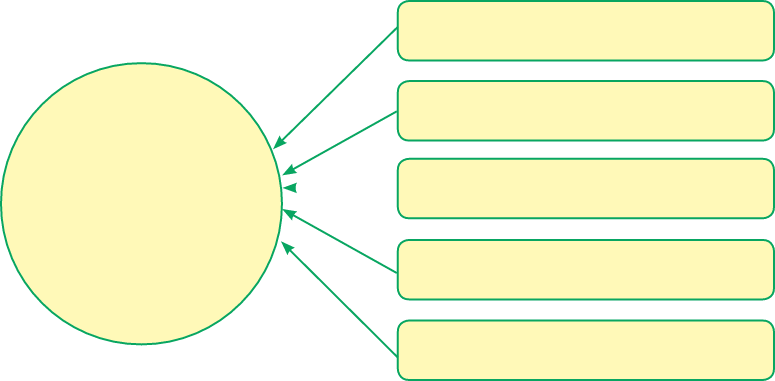

buy things we need for farming, for example, seeds and tools, and where to sell our products.
Therefore, farming is also an art of using our hands and our brains to make crops and animals grow successfully.
Exercise 1.1
1.
2.
3.
Branches of Agriculture
You have learnt that agriculture is both an art and a science.
It involves different activities from the beginning to the end of producing animal and crop products.
To do these activities well, we need to study specific fields of agriculture.
These fields are also called branches of agriculture.
Agriculture is broadly divided into five branches as shown in Figure 1.2.

Crop production
Crop production involves different activities from planting seeds to selling the crops.
Here are some of these activities:
- (a) Planning what crops to grow;
- (b) Preparing land for planting;
- (c) Planting the seeds;